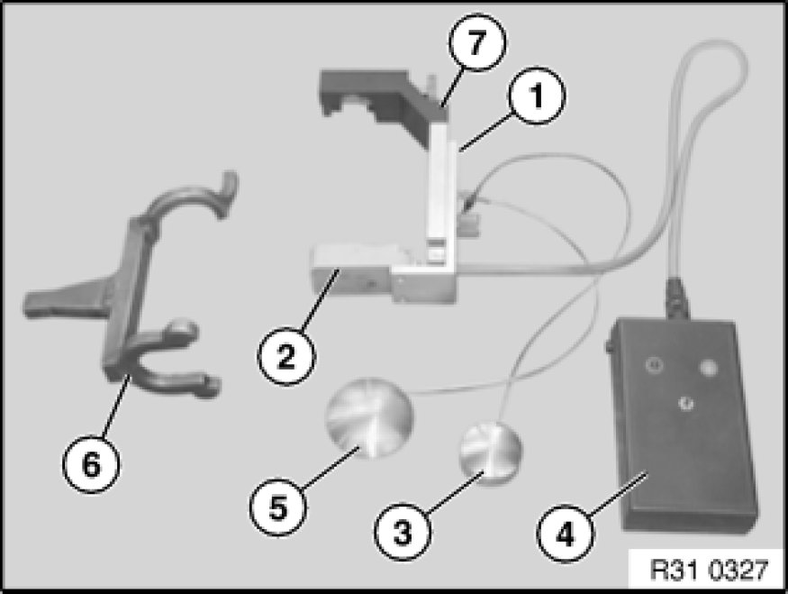
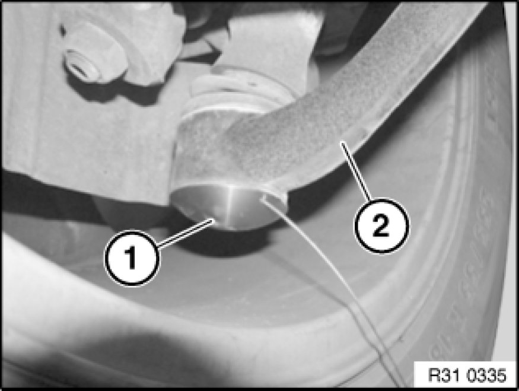
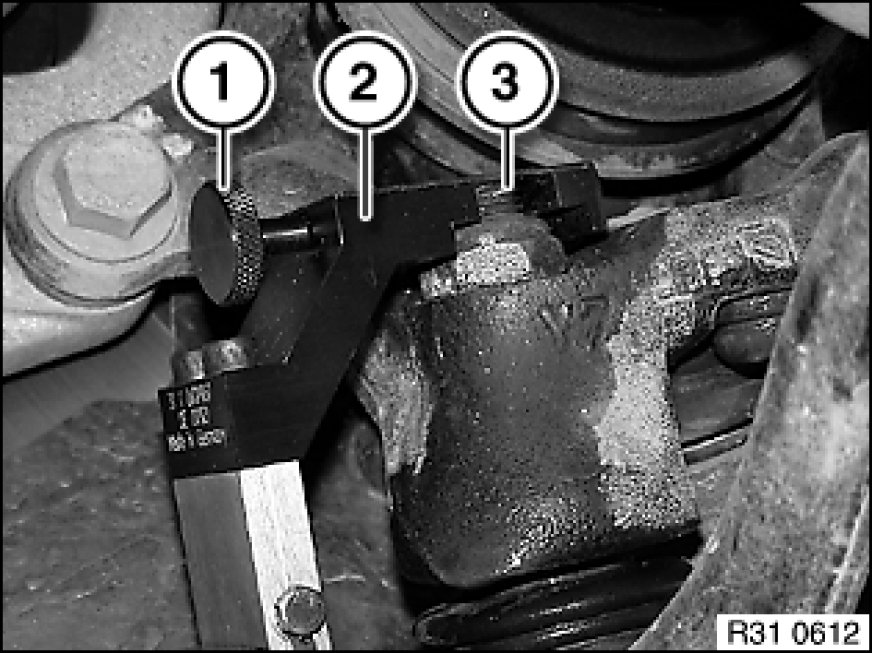
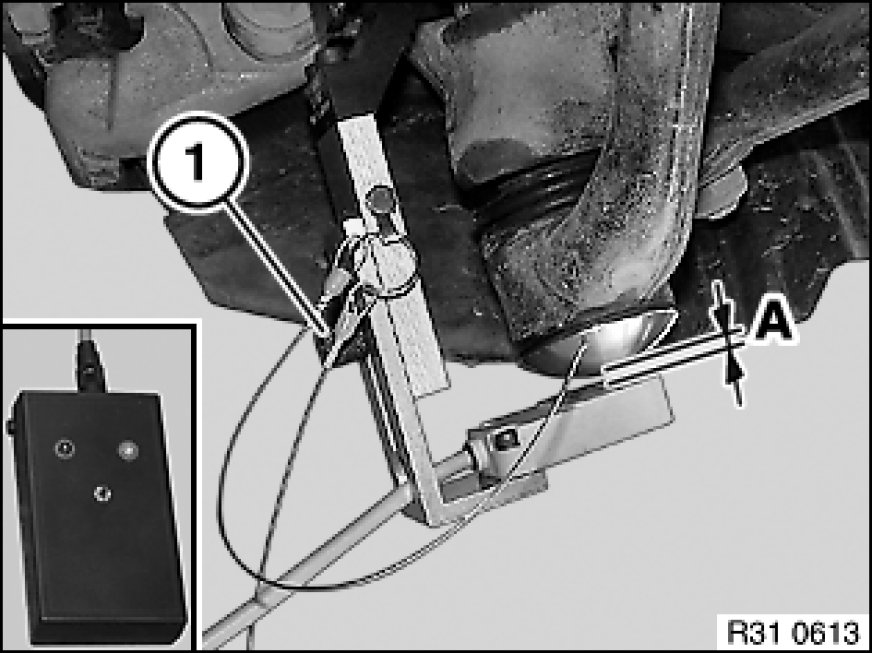
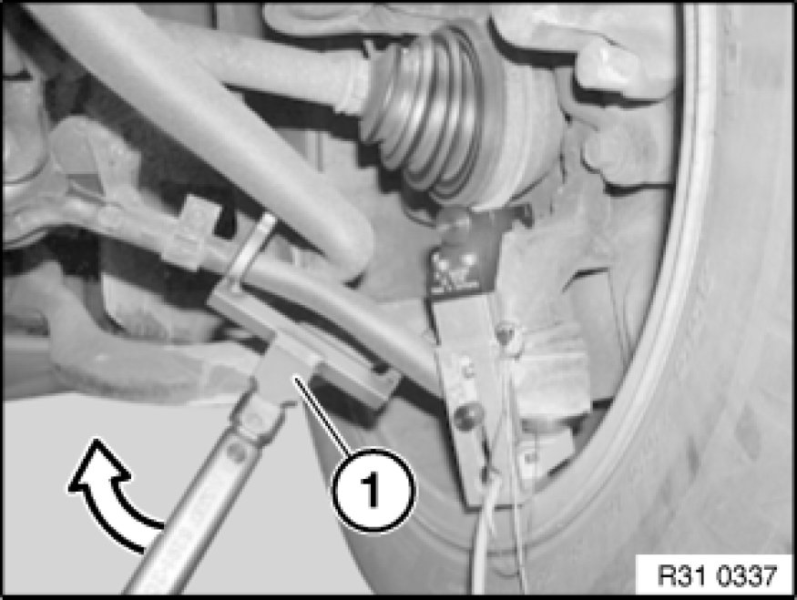
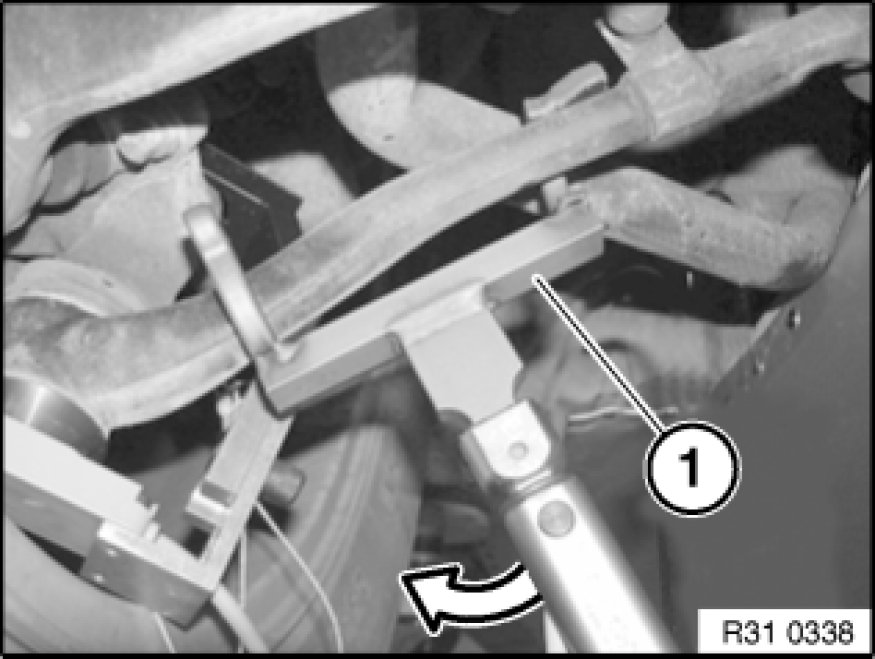

Ball Joint: Testing and Inspection
31 12 023 - Measuring play of wheel control joints

Special tools required:
- 31 1 060 31 1 060 Test Fixture

Test apparatus (31 1 060 31 1 060 Test Fixture):
1. Slide (31 1 061)
2. Measuring electronics (31 1 062)
3. Magnetic retainer (31 1 063)
4. Evaluation electronics (31 1 064)
5. Magnetic retainer (31 1 065)
6. Hook wrench (31 1 066)
7. Measuring clip (31 1 067)

Note:
Carry out check using DIS Tester (Service functions). To substantiate that the check has been carried out properly, include the diagnosis report (paper printout) with the warranty application.

On vehicles with 17" or 18" rims, the front wheels Removing or Installing Front or Rear Wheel must be removed if necessary.
Important!
Make sure magnetic retainer is correctly seated.
Position magnetic retainers (1) on housing cover of control arm (2).

Important!
Measuring clip must not contact the control arm.

Fit measuring clip (2) on threaded stem (3) of joint and screw down with locating screw (1).
Press button on evaluation electronics.
Note:
The device performs a self-test.
Both LEDs flash, then the red LED lights up permanently.

Move slide with measuring electronics upwards until green LED lights up.
Note:
Gap (A) between measuring electronics and magnetic retainer must be approx. 5-7 mm.
Then secure slide with clamping screw (1).
Press evaluation electronics button for approx. 2 seconds until the green LED flashes.
Note:
The device is now calibrated and ready for measuring.

1.) - Test:
Set torque wrench to 60 Nm.
Introduce a force with hook wrench (1) in the direction shown until torque is obtained.
Read off test result:
- Red LED flashes: Joint must be replaced
- Green LED flashes: Carry out 2nd test

2.) - Test:
Reposition hook wrench.
Introduce a force with hook wrench (1) in the direction shown until torque is obtained.
Read off test result:
- Red LED flashes: Joint must be replaced
- Green LED flashes: Joint must not be replaced